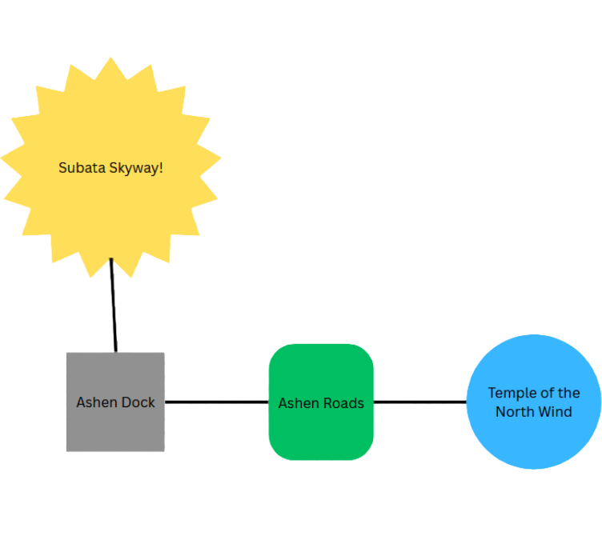
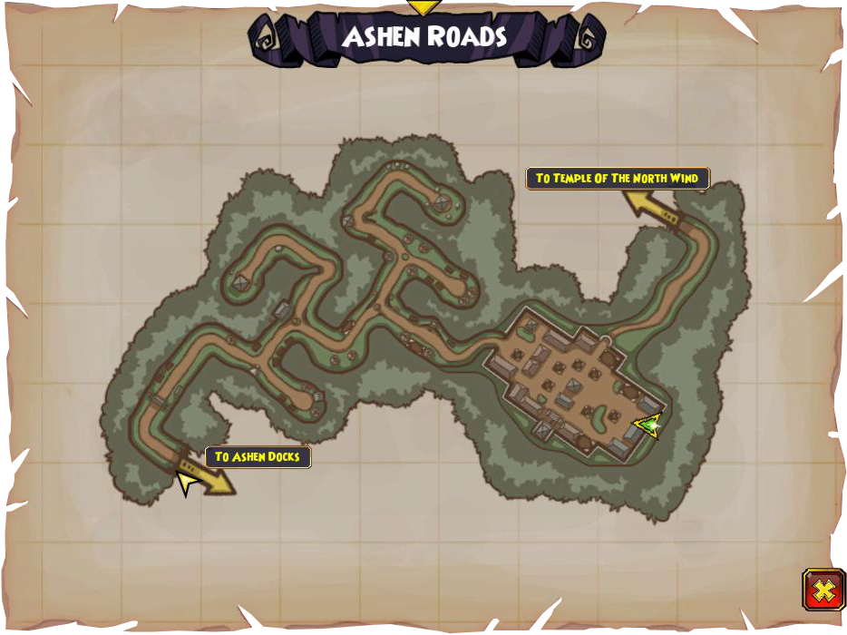
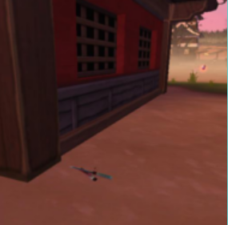
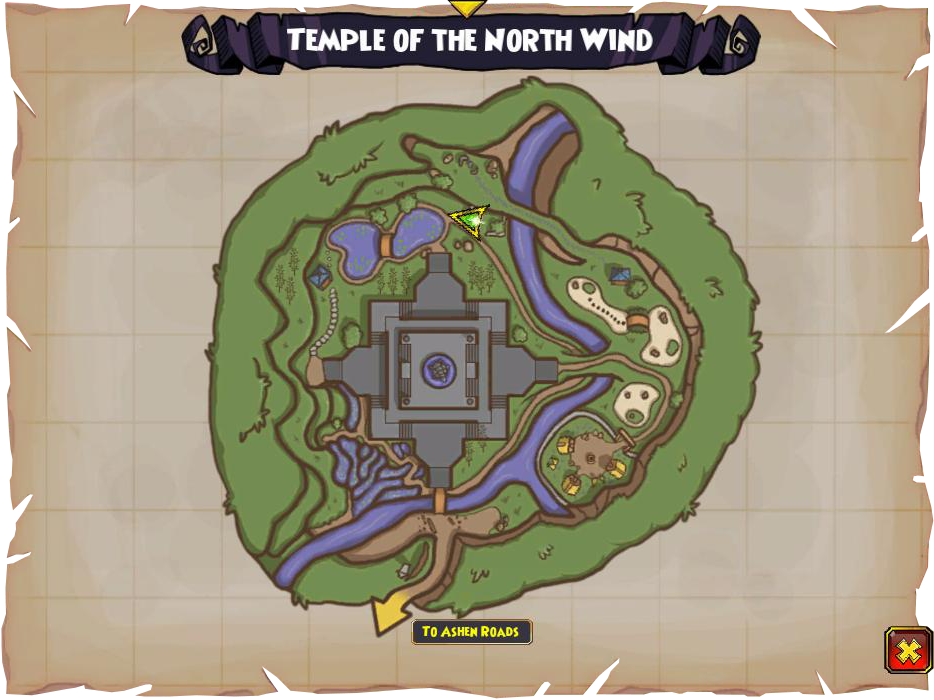
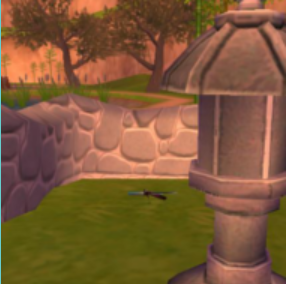

Dock connections
These areas are simply connected. In Subata Skyway, you can find this dock, which connects to Ashen Roads, which connects to the Temple of the North Wind.


Zeke Quest Info!
There are actually two zeke collectibles if you are doing his quest for this dock and the locations it is connected to. One is in the Ashen Roads and the other is in the Temple of the North Wind.
Ashen Roads Knife


The knife is beside a house on the right edge of the village.
Temple of the North Wind Knife


The knife is nearby two goat monks and the lake.